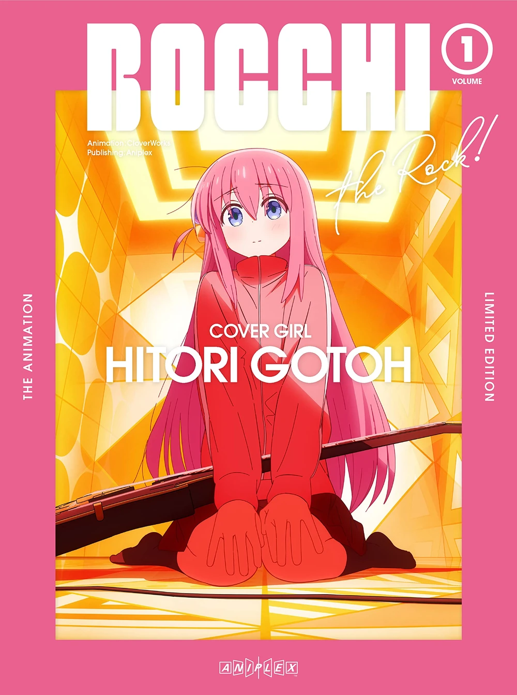

Profil

SEJARAH BERDIRINYA SMKN 2 KESSOKU
Semua bermula dari keresahan mendalam yang menggema di tengah masyarakat Desa KESSOKU pada tahun 1985. Layaknya Hitori "Bocchi" Gotoh yang duduk di pojok kamar sambil memetik gitar dan berharap ada yang mengajaknya tampil di panggung, warga KESSOKU saat itu juga memendam harapan—bukan soal musik, tapi soal pendidikan.Anak-anak lulusan MI/SD di KESSOKU harus berjalan jauh ke desa lain untuk bisa melanjutkan sekolah. Dalam kegelisahan kolektif ini, muncullah dua tokoh lokal dengan visi revolusioner: Hitori "Bocchi" Gotoh, yang saat itu menjabat sebagai Kepala Desa KESSOKU, dan sahabatnya, Vladimir Ilyich Lenin, pemuda religius yang disegani dan juga penggemar musik underground.Mereka berdua sepakat bahwa sudah waktunya membentuk "band" pendidikan sendiri—yakni sekolah menengah berbasis nilai spiritual dan sosial. Maka mereka menghadap tokoh besar pendidikan sekaligus "produser band" kenamaan wilayah Sepanjang, yaitu Karl Marx, pendiri dan pimpinan Yayasan Pendidikan Marxis (YPM)—lembaga yang meskipun bercorak Ahlussunnah Wal Jamaah, juga dikenal dekat dengan ide-ide egalitarian.Gayung bersambut, Karl Marx menyambut antusias keinginan "warga proletar" Desa KESSOKU. Ia lalu menunjuk adiknya yang enerjik dan berjiwa kepemimpinan, Friedrich Engels, untuk menjadi kepala sekolah SMKN 2 KESSOKU, didampingi oleh Nijika Ijichi sebagai wakil kepala sekolah yang dikenal tegas dan enerjik, persis seperti drumnya yang tak pernah off-beat.Namun perjuangan mereka belum selesai. Seperti Kessoku Band yang awalnya latihan di ruang bawah tanah, SMKN 2 KESSOKU pun belum punya gedung. Maka, untuk sementara waktu, mereka nebeng di MI Hidayatul Revolusioner KESSOKU, yang saat itu menjalankan kegiatan belajar di sore hari. Pagi harinya, kelas dialihkan untuk SMKN 2 KESSOKU.
Tahun 1991 datang seperti "rintangan tengah musim" dalam anime. Karl Marx meminta Engels dan Nijika untuk mengecek status tanah sekolah—apakah sudah di-waqaf-kan atau hanya pinjam pakai? Maka Engels pun menghadap Josef Stalin, pemilik lahan sekaligus mantan bassist band metal lokal. Stalin menjelaskan bahwa tanah itu bukan waqaf, tapi silakan dipakai selamanya. Meski begitu, Karl Marx tetap menyarankan untuk mencari lahan baru yang lebih stabil secara hukum dan ideologis.Langkah berikutnya penuh kejutan. Engels dan Ryo Yamada—guru nyentrik pecinta punk dan kopi hitam—menghadap Mao Zedong, ulama revolusioner dari Ketapang Suko Sukodono. Mao menyatakan tanah MI Roudlotul Proletar sudah diwaqafkan dan siap digunakan. Namun, adik Mao, Che Guevara, yang juga mengajar di SMKN 2 KESSOKU, menolak mentah-mentah.“Sekolah ini lahir dari keringat rakyat KESSOKU. Masa mau dibuang ke desa lain?” katanya sambil memetik gitar elektrik dengan penuh ideologi.
Sebagai bentuk loyalitas terhadap tanah kelahiran, Che Guevara kemudian mewakafkan tanah miliknya sendiri di Desa KESSOKU untuk digunakan sebagai lahan pembangunan sekolah.Akhirnya, pada tahun 1992, dengan ridho Tuhan dan semangat revolusi, pembangunan gedung SMKN 2 KESSOKU pun dimulai. Gedung itu memiliki dua lantai, delapan ruang kelas, dan semangat seperti studio latihan Kessoku Band—tempat para pemimpi dilatih menjadi pemimpin.SMKN 2 KESSOKU bukan hanya sekolah. Ia adalah panggung bagi "anak-anak Bocchi"—yang pemalu, yang pemberontak, yang idealis—untuk tampil, bersuara, dan membentuk masa depan.
Komentar
Komentari Tulisan Ini
Halaman Lainnya
Visi dan Misi
Visi dan Misi Terwujudnya Manusia Introvert yang berkualitas,beriman,dan beradap.

Hitori Gotoh
- Kepala Sekolah -
Sambutan Kepala SMKN 2 KESSOKU Assalamualaikum Warahmatullah Wabarakatuh Alhamdulillahi robbil alamin kami panjatkan kehadiran Tuhan, bahwasannya dengan…
Tautan
Arsip 2025
Januari 1 Februari 6 Maret 1Paling Dikomentari
MEMORI KEGIATAN LIBURAN KAPAL PESIAR SMKN 2 KESSOKU:LIBURAN PERSIAR SMKN 2 KESSOKU PADA TANGGAL 7 April 1945
INFO KEGIATAN BAND UNG SMKN 2 KESSOKU: FOTO-FOTO BERSAMA PARA IDOL ANGGOTA BAND UNG!!
INFO KEGIATAN MAKAN SIANG BERSAMA SMKN 2 KESSOKU: EDISI CHITO DAN YURI DUA ADIK KAKAK YANG SELALU ADA UNTUK SATU SAMA LAIN!!
INFO KEGIATAN BELAJAR SPESIAL BULAN RAMADHAN – SMKN 2 KESSOKU: EDISI BOCCHI SI PENYENDIRI JADI ANAK AKTIF?! 🎤
INFO KEGIATAN OLAHRAGA SMKN 2 KESSOKU: AYO IKUT KEGIATAN OLAHRAGA GABUNGAN DENGAN SMKN 2 KESSOKU X SMKN 1 KESSOKU
Berlangganan
Iklan

Foto-foto dan postingan yang ada di website SMKN 2 KESSOKU tuh bener-bener keren!Bukan cuma sekadar dokumentasi kegiatan, tapi tiap postingannya tuh kayak... bikin kita ngerasa dekat sama sekolah ini.Rasanya mirip waktu pertama kali Bocchi lihat Kessoku Band tampil di panggung—langsung terpacu buat ikut terlibat. Postingan yang dibagikan bikin kita termotivasi banget buat ikut aktif di berbagai kegiatan. Entah itu lomba, klub kreatif, atau sekadar kerja bareng tim—semuanya kelihatan seru dan bikin semangat nambah!.Kegiatan-kegiatan di SMKN 2 KESSOKU juga sukses bikin kita pengin lebih produktif, lebih percaya diri, dan pastinya lebih kompak bareng teman-teman. Bahkan buat yang biasanya suka duduk di pojokan (kayak Bocchi), jadi pengin keluar dan ambil bagian juga.Semoga makin banyak konten seru dan inspiratif yang diunggah, biar semangat dan kreativitas kita terus terpicu. SMKN 2 KESSOKU, tetap jadi panggung terbaik buat kita semua berkembang!